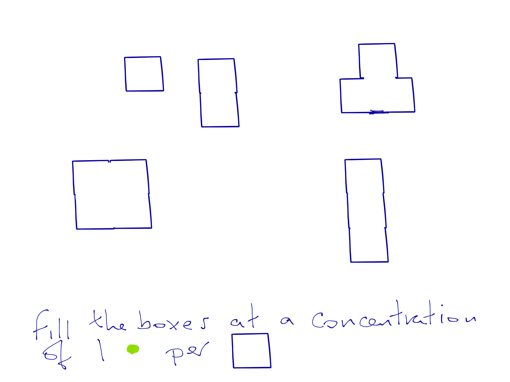

Concentration
How much of one thing there is in another thing
General example
If 100 pupils are in the school playground
That is 100pupils per playground as a type of concentration
why use concentration?
Because it can be applied to many playgrounds
If we said that this was the maximum concentration of pupils allowed.
Then a school of 200 pupils would need 2 playgrounds
Dots and Squares exercise

Write a paragraph to explain how you decided on the number of dots in each shape.